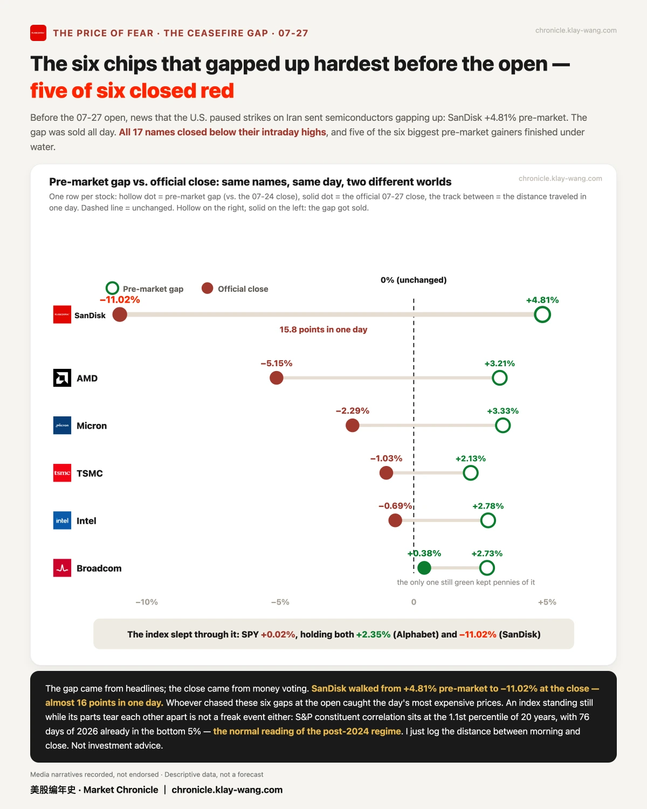
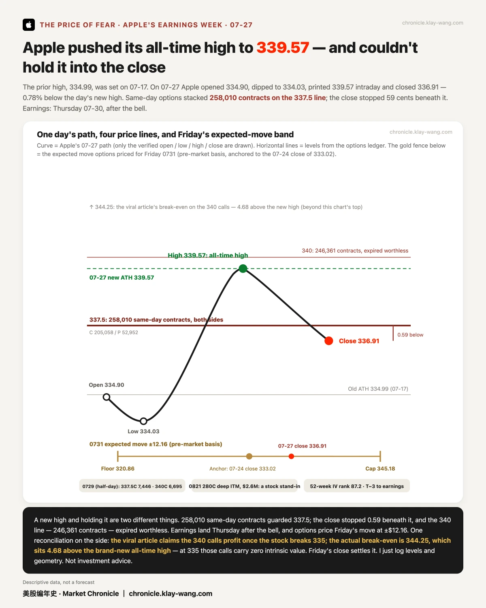
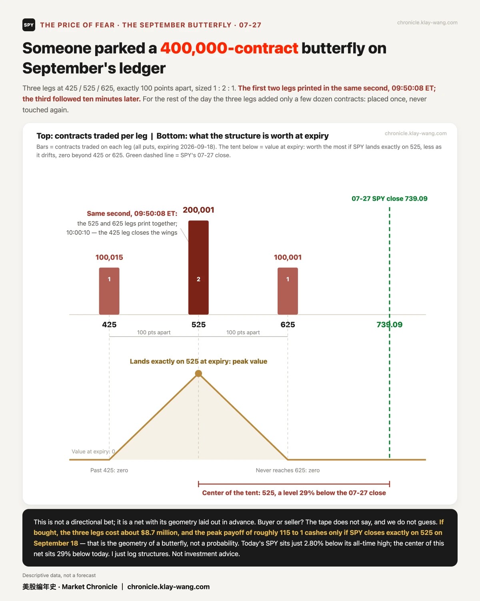
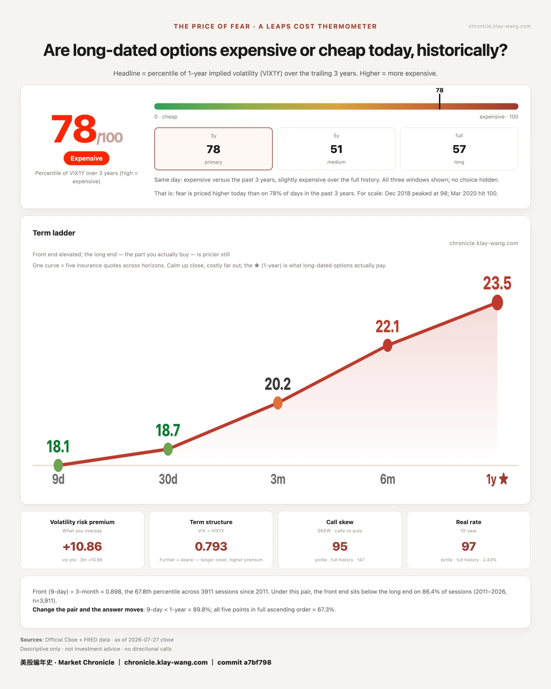

市场今天追的是英伟达的信用故事， 不是存储的供给故事· 07-27 · 7.27-7.31
• The ceasefire gap got sold all day: of the six chips that gapped up hardest pre-market, five closed red — SanDisk went +4.81% to −11.02%
• Apple printed a new all-time high and couldn't hold it: 258,010 same-day contracts sat on the 337.5 line; earnings Thursday after the bell
• That viral VIX-shorts warning names the wrong culprit: the real 19-year extreme belongs to the perennial insurance buyers
📋 The gap came from headlines; the close came from money voting
My read: the pre-open pop was fireworks — all 17 names closed below their intraday highs.
The ceasefire arrived hours before the opening bell, and so did its price. Futures gapped up into the 07-27 open with semiconductors at the front of the line: SanDisk +4.81% pre-market, Micron +3.33%, AMD +3.21%. What followed was six and a half hours of unhurried selling: SanDisk closed −11.02%, AMD −5.15%, Nvidia −4.99%. Five of the six biggest pre-market gainers finished under water, and all 17 names closed below their intraday highs — in a lockstep that looked rehearsed. That lockstep is the day's most important detail: single-stock stories do not move seventeen names in step. Only one explanation fits — the ceasefire was fully paid for in the pre-market pop, and after the open no second wave of buyers ever arrived. Whoever chased the gap did not misjudge a company; they mistook the price of news for the start of a move, and the bill for that difference ran to fifteen points.
The index slept through all of it. SPY closed +0.02%, holding Alphabet's +2.35% and SanDisk's −11.02% in the same belly. Days like this should no longer read as freak events: S&P constituent correlation lies at the 1.1st percentile of twenty years, and 2026 has already logged 76 days in the bottom 5%. The average is this market's best disguise; the spread is its actual face.
〖图：卡4_跳空反转_EN ： 拖图到本行下面的空行，然后删掉这行文字〗
🍎 Apple pushed its all-time high to 339.57 — and couldn't hold it
My read: a new high and holding it are two different things, and 258,010 contracts sat on the line in between.
Intraday 339.57, close 336.91. In a single session Apple wrote a complete story about new highs: it opened at 334.90, almost exactly on the 07-17 peak; pushed to 339.57, an all-time high; and gave it back into the close, finishing 0.78% below the day's summit. What stood between the close and the high was not luck but 258,010 same-day contracts: real money had drawn a line at 337.5, and the close was pressed 0.59 beneath it. Half-strike gravity, in the age of same-day options, is a mechanism — not a coincidence.
The colder ledger sits one strike up. The 340 line, the chain's largest at 246,361 contracts, expired worthless. An article making the rounds claimed those calls turn profitable once the stock breaks 335; the actual break-even is 344.25, a full 4.68 above the brand-new high, and at 335 the calls carry zero intrinsic value. The people who paid for that sentence settled a multi-million-dollar bill for skipping arithmetic; Friday's close grades the claim, and we will be back for it. Earnings arrive Thursday night with short-dated insurance at its 87th percentile of the year — whoever starts buying protection now is paying the earnings tax in full. Options price Friday at ±$12.16.
〖图：卡5_苹果财报周_EN ： 拖图到本行下面的空行，然后删掉这行文字〗
🪞 One Magnificent-Seven basket, holding 0% and −30% at once
My read: the day Apple set a new high, Microsoft sat 30% below its own.
Same day, same basket, two fates. At the moment Apple printed an all-time high on 07-27, Microsoft sat 29.94% below its own peak — a peak set exactly one year earlier; Tesla was 38.03% below, Meta 25.42%, Alphabet 20.08%, Amazon 16.92%. Seven engines, five of which last hit full speed six months to a year ago. The index barely shows it: QQQ is down 8.89% overall, SPY just 2.80%. Whoever feels safe holding the index has mostly never opened the basket; today's composure leans on Apple and index weights.
None of this is evidence of breakage. A drawdown marks a level already visited, not one a stock is heading back to. But it does discount the phrase an index means diversification: with constituent correlation at the 1.1st percentile of twenty years, the index's calmest days are precisely the days its parts cancel each other hardest. Diversification has not disappeared — it has simply taken the shape of a hedge.
〖图：卡6_Mag7裂口_EN ： 拖图到本行下面的空行，然后删掉这行文字〗
🦋 Someone parked a 400,000-contract butterfly on September's ledger
My read: not a directional punt — a net with its geometry laid out in advance.
At 09:50:08, in the same second, two blocks printed on September's ledger: 100,000 SPY 0918 puts at 625 and 200,000 at 525; ten minutes later, 100,000 at 425 closed the wings. Three strikes, exactly 100 points apart, sized 1 : 2 : 1 — textbook butterfly geometry. From there to the close, the three legs added a few dozen contracts combined. Placed once, never revisited.
The tape carries no direction, and we do not guess. But the shape of the net speaks for itself: net directional exposure under 0.07 across three legs, and a payoff that peaks only if SPY closes exactly on 525 on September 18 — roughly 115 to 1, which is the geometry of a butterfly, not anyone's odds. Direction traders do not build nets this shape; if bought, the legs cost about $8.7 million and read like disaster insurance executed on a budget. What lingers is the calm of it: with SPY just 2.80% below its all-time high, someone quietly paid the premium on a world 29% lower. Panic does not place orders like this. Budgets do.
〖图：卡2_九月蝴蝶_EN ： 拖图到本行下面的空行，然后删掉这行文字〗
🧾 The day the credit story broke, Nvidia fell through two of its own lines
My read: real money sits on both sides of this ledger — it is not a one-way story.
The credit-worry story fermented in daylight, but the price had moved earlier. Pre-market, Nvidia was one of only three names in seventeen whose short-dated insurance got dearer against the tape; per WSJ and ICE, the cost of insuring its debt rose on the day (cited, not verified — we hold no primary data). The close settled at 196.51, down 4.99%, erasing roughly $250 billion of market value in a session. Set that number in its historical frame: it lands right beside Meta's famous $251 billion of February 2022 — and of the five names on the all-time single-day wipeout list, four are Nvidia. The same candle broke two lines at once: the gamma flip at 196.94 and the put wall at 200, with five put strikes adding into the fall.
The clue easiest to miss is the third one: the call side stayed just as alive — the day's largest long-dated print anywhere was the September 2027 200C — and front-month IV at 42.64 still sits below LEAPS at 43.40; the term structure never inverted. Read together, this looks more like an event-driven repricing than a ledger walking away from a company. That is our reading; it goes on the record, and if it is wrong we will say so. The real test is not today's 82 basis points but persistence — the ledger has laid out positions across every week of August, and we will be back daily to check.
〖图：卡7_英伟达双穿_EN ： 拖图到本行下面的空行，然后删掉这行文字〗
⚖️ That VIX-shorts warning, checked against 19 years of books: wrong culprit
My read: the warning shouts about speculators; the extreme belongs to the stewards.
A warning has been racing around these past two days: speculators' VIX shorts are near a historic extreme, primed to blow. We reconciled all 1,009 weekly CFTC reports since 2006, and the books say the opposite: hedge funds are currently net long +3,098, the 84.6th percentile of 19 years, with gross shorts sitting exactly at the median — nothing anywhere near a squeeze.
The genuine extreme sits at the other table. Asset managers are net short 41,539 contracts, the 0.8th percentile of 19 years. For nineteen years hedge funds mostly sold the insurance and asset managers bought it; since 2024 the two tables have swapped seats, and the stewards have pushed their chips to the selling end for the first time on record. The warning went viral not because it is right but because it is short — a nineteen-year seat-swap compressed into a five-word scare travels fast. Scary sentences outrun reconciled ones; our trade is the slow half. The caveat, as always, up front: this ledger carries only these two categories, so if the claim cites another cohort from another report, we cannot reproduce it, and we will not pretend to.
〖图：卡3_VIX换座_EN ： 拖图到本行下面的空行，然后删掉这行文字〗
🔇 Memory crashed 20% — and its options ledger stayed quiet
My read: the hardest-hit name has the quietest ledger, and that asymmetry is the day's information.
SanDisk lost 20.6% in two days — 10.79% Friday, 11.02% Monday — and now closes 112 points below its own put wall. By the script, a day like this should crowd the options ledger with escapes and dip-chasers. The actual count: Nvidia 12 flagged orders, SanDisk 1, Micron 0. The options market spent the day chasing Nvidia's credit story; nobody chased memory's supply story.
The indifference is the day's sharpest reading. Under the strict screen SanDisk logged a single new bet all day; its wall and flip were left 112 and 723 points behind, the market makers' map still trailing the price. Price running, positions still: this reads like shares settling a valuation bill, with professional money declining to upgrade it into a structural event. The hardest fall carried the quietest ledger — and quiet, some days, carries more information than panic. That reading is on the record too, and we will come back for it.
〖图：卡8_存储悖论_EN ： 拖图到本行下面的空行，然后删掉这行文字〗
📎 A side note: deep-in-the-money options standing in for stock — four names in one day
My read: one technique, four tickers, both directions, all in earnings week.
The article going around describes buying Apple's 280 calls as a stock substitute (they move nearly one-for-one). The same day, our scans caught: two deep-in-the-money Amazon put blocks totaling nearly $7 million in premium — the 287.5 line had zero prior open interest, brand-new positioning that covers Thursday's earnings — and a Microsoft same-day 405 put trading at parity for $6.27 million. One substitutes for longs, one for shorts. Direction, as always, is not in the data; we log the structure.
🌡 Thermometer: 78 / 100
What it is: my "fear thermometer" measures one thing — how much the market pays, right now, to insure the next year. The dearer the insurance, the more afraid the market is.
07-28 reading: 78 out of 100 — this insurance is priced in the top 22% of the past three years.
Why it matters to you: the ceasefire took the near-term fear down — short-dated insurance got cheaper on 13 of our 17 names on 07-27 — but the price of insuring the next year barely budged. The short-term panic scatters fast; the long-term fear is still standing where it was.







No investment advice. No direction calls. No market timing.